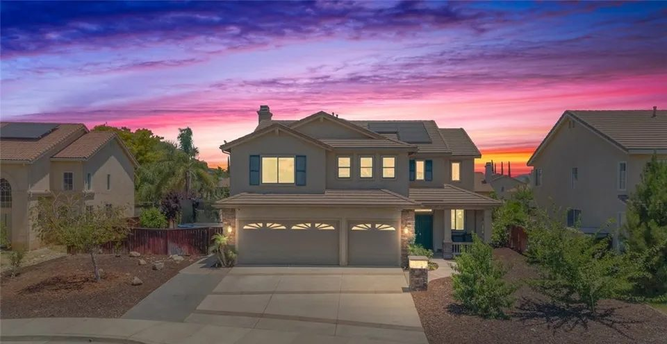

Client reviews
Jim Holbrook Reviews
Sellers and buyers in their own words, from Jim's Google and Zillow reviews.
In their words
Reviews, as they were written
Unedited except for punctuation. Many are from sellers: trustees selling a parent's home, owners selling from out of state, and people selling a home for the first time.
Rated 5 out of 5
Working with Jim to sell our first home of 20 years was the best possible experience we could have imagined. From the first meeting to closing, Jim listened to our needs and concerns, provided excellent insight, advice, and always made us feel comforted in the process. He was always available and extremely responsive and given this was our first time selling a home, he was extremely patient when explaining everything to us and providing all the available options. He’s a true professional and I cannot imagine why anyone would not want to leverage his extensive experience and expertise. if we have our choice, we would never use anyone but Jim.
Rated 5 out of 5
As Trustee for my Mother-in-Law, earlier this year the difficult decision was made to sell her long-time home in Temecula. The task was complicated as no family resided in the immediate area. Everything I did related to the sale would need to be done remotely by phone and internet. I felt the task of selecting a realtor was the key to the entire undertaking and I feel very fortunate that in the end we selected Jim Holbrook of Performance Realty as our agent. Jim did a fantastic job for us. He was a steady hand-on-the-tiller so to speak as we progressed from listing to close of escrow. If I called, he replied, not an easy thing to do all the time, but very important to me being so far away. The same thing needs to be said for the team supporting Jim. One person cannot do it all. Everyone I had contact with thoughout the process was a true professional. I feel very confident recommending Jim and Performance Realty for your real Estate needs.
Rated 5 out of 5
We interviewed the top 3 Realtors for the Temecula area and we liked all 3, but Jim stood out with the vast knowledge he carries. His professionalism shined through while at the same time making you feel completely at ease. His presentation and information he provided sealed the deal for us. The process of selling our home was quick and smooth. His response time whenever we had a question or concern was always prompt. We are so glad we chose Jim and we highly recommend him.
Rated 5 out of 5
Jim has represented us for two separate transactions now and in both cases we were very pleased. In the first case, Jim professionally marketed and quickly sold our primary residence. The selling price remains a record for the neighborhood. Most recently Jim handled the sale of an investment property on our behalf. We now live out of state so the entire transaction occurred with Jim flawlessly managing every detail minimizing the need for us to be present. Jim is honest, strait forward and extremely knowledgeable. He provides professional service at a fair price. I will always use Jim for my Southern California real estate needs and he carries my strongest recommendation to others.
Rated 5 out of 5
Jim was fantastic to work with. He made everything so easy to understand and always answered any questions we might have very quickly. We had never sold a house before so we really needed someone we could trust. We found that in Jim. We so appreciated all of his patience with us. Our house sold so quickly we couldn't believe it. And if was over the asking price. The stager and photographer also did a great job. Thank you so much Jim. If we ever need to sell again we know who to come to. We will refer you to everyone. Thank you again.
Rated 5 out of 5
Selling our home in Temecula's competitive local market felt incredibly overwhelming, but we were in the absolute best hands from day one with Jim Holbrook. Jim didn't just act as our realtor, he felt like a trusted partner who truly cared. His personal knowledge of the Temecula area and strategy took a massive weight off our shoulders. We were amazed at how incredibly quickly our home sold, all while Jim kept us supported and informed at every single step. He made a stressful major life transition feel smooth and seamless. If you want a realtor who brings both unmatched expertise and genuine heart to the table, we cannot recommend Jim Holbrook highly enough!
Rated 5 out of 5
Listing sold in 4 days! From meeting Jim, to listing, to coordinating photos, home staging, and buyers this sale breezed thru with no hiccups. Jim was informative, available, and knowledgeable. Escrow was quick and painless. My husband and I highly recommend Jim.
Rated 5 out of 5
Jim was a consummate professional and took care of the sale of our home in an expedited and efficient manner. The listing was outstanding. He promptly to replied our phone calls, emails and text messages and helped close escrow earlier than scheduled! We are certain that we will ask for his services again whenever we decide to buy another home in the area. Thank you, Jim!
Rated 5 out of 5
Jim and his team have customer service values you don’t find very often, especially in the Real Estate industry. We had the absolute pleasure of working with Jim and his highly efficient and proactive team recently, he sold our property quickly and did everything for us, it was the easiest real estate transaction I have experienced! I highly recommend Jim, he has many years of experience in the industry and excellent contacts and resources to get your transaction closed quickly...thank you Jim... we appreciate everything you did!
Rated 5 out of 5
Extremely experienced, knowledgeable and patient agent. I am a first time home seller and his help was essential and appreciated. Thank you
Rated 5 out of 5
Jim and his team are very professional. We interviewed several agents and Jim stood out from the rest. Glad we did as we had an offer after about a week.
Rated 5 out of 5
Our experience working with Jim was amazing. He took all the worries out of selling our home. He answered all of our questions and kept us up to date on every step of the way. Highly recommend.
Rated 5 out of 5
I would recommend this Realtor to all my friends and family. His entire team was seamlessly perfect. They answer their phones and emails promptly, and are extremely professional in every manor. They all are incredibly knowledgeable of the ins and outs of selling or buying a home. I would hire them again and again! You can’t go wrong with this team!

Selling soon?
See how Jim sells a home
Presentation, pricing, exposure and negotiation: the four things these reviews keep coming back to.
Contact
Talk to Jim
Call or text (951) 514-0734, or send a note, and Jim will get back to you himself.